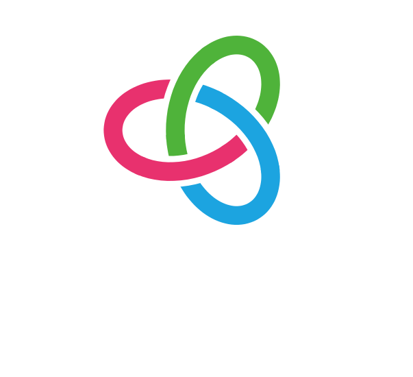

We gather on the roads and trails. We ride, we race, we train. And we do these things not as nameless cyclists, but together with friends. We are united by our shared passion, yet each of us is unique.
We never ride alone. We are part of a vibrant, engaging community that cares deeply about our shared vision and goals. Whether we get caught in the rain on a ride, plan or follow a route, compete with friends, cheer each other on, or give a kudo, our community is always with us.